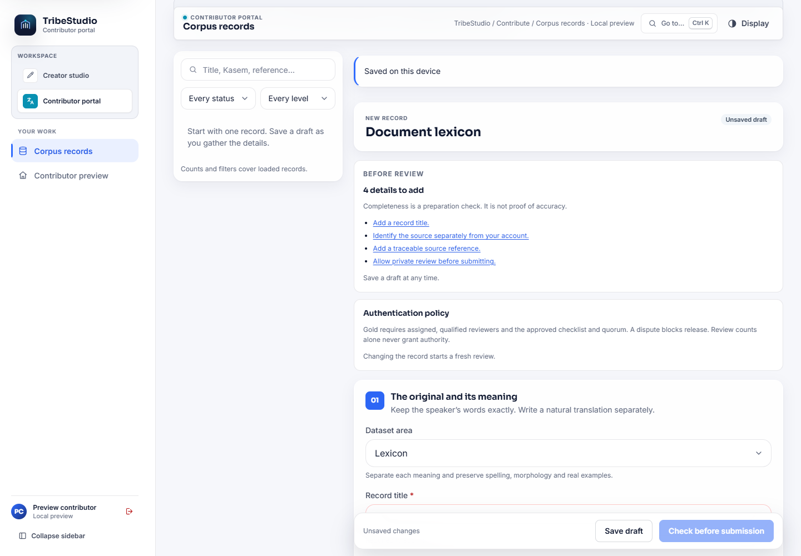
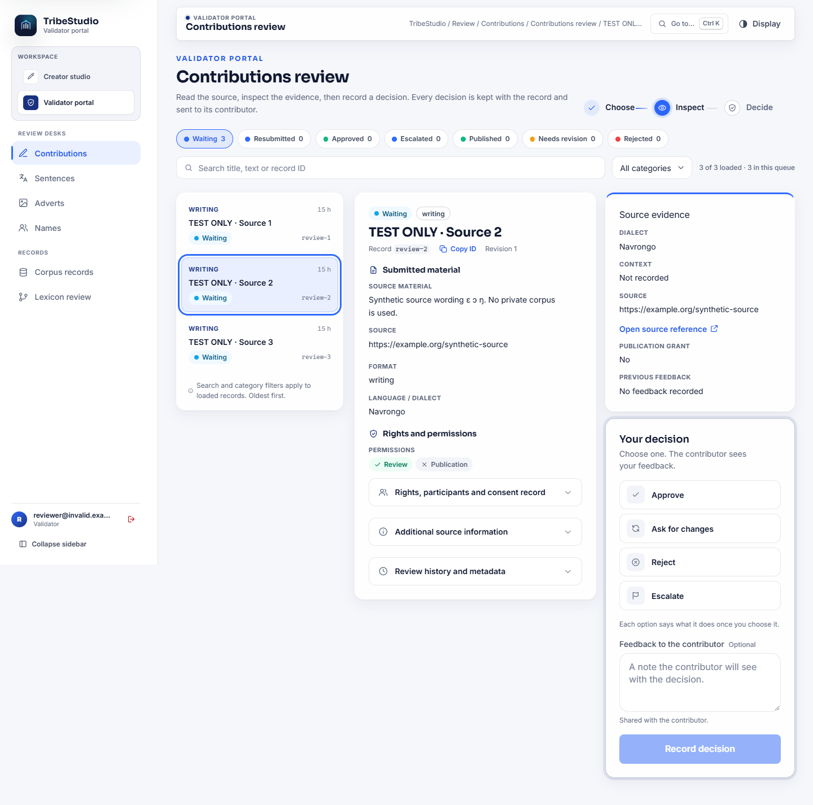
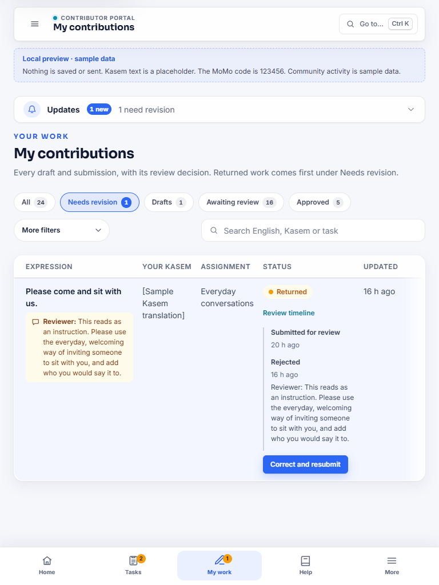
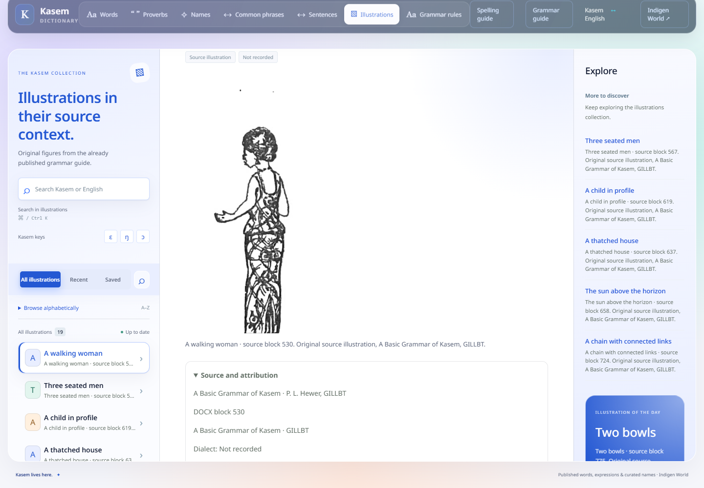
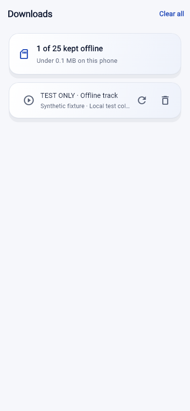

Useful contributions deserve a reliable path from an unfinished answer to a reviewed record. This update brings recovery copies, clearer review evidence and better source browsing to the existing Indigen World tools, alongside improvements to offline listening and mobile data use.
The established contribution editors save a recovery copy for the account that wrote it. Look for the saving, saved or error message, then choose Continue draft when returning. Recovery keeps the supported text, category, dialect and other fields; it never sends an answer automatically. Permission confirmations must be checked again. An unfinished attachment may need to be selected again; completed upload references are retained where the editor supports them.
A different account cannot open your recovery copy. When the saved version differs from the current version, you choose which to continue. A failed submission retains the answer. Supported retry receipts return the original submission after a lost acknowledgement instead of creating another record.

The reviewer workspace puts submitted material beside its available source evidence, dialect, context and publication eligibility. Reviewers can filter a focused queue, move with the keyboard and keep their place after a decision. If another reviewer decides the same record first, the old decision controls lock until the latest version is loaded. Existing authorization, required reasons and self-review restrictions still govern every decision.

My contributions shows the stored review rounds, feedback and next action. Submitted, approved and published remain separate. A correction opens the established editor with the permitted earlier content; the earlier revision and review history remain auditable.

The existing public reader brings words, whole expressions, sentences, grammar rules and the already published grammar illustrations into consistent search and category browsing. Each record has a stable link. Open Source and attribution to see the available book reference, section, credit and dialect, then follow the existing spelling or grammar guide. Missing metadata is labelled honestly.
Kasem spelling and Unicode remain as recorded. Expressions, sentences and rules stay whole; the reader does not assemble translations from word fragments. Unpublished and restricted records stay outside public browsing.

Kawuri also gains a bounded retrieval index, prepared for an operator-controlled rollout. Search keys select candidates; the server rereads the original sources and their current permissions before returning evidence. Uncertain queries retain uncertainty responses. The index does not generate new Kasem, and its candidate limits are documented.
The ten progress categories open their established contribution destinations with the appropriate category selected. Sign-in preserves the destination. When progress totals are unavailable, the contribution links remain available without invented counts. Existing pipeline animation, reduced-motion support and counting rules are preserved.
Downloaded tracks can be played directly from Downloads using the existing player and queue controls. Missing or damaged files offer repair or removal. Offline playback continues to require the current account and subscription entitlement; downloaded files do not create permanent paid rights.
The offline repository, queue and Downloads widget have been exercised with synthetic tracks. Physical-device audio playback has not been verified.

In mobile Settings, enable Low-data mode to avoid optional video autoplay, neighbouring video preloads and full image requests until you choose to open media. Existing thumbnails are used when available. Deliberately opening a video or playing audio still works through the normal controls. The setting is saved on the device; it does not claim to detect cellular or Wi-Fi connections.
The local checks cover account recovery, retries, reviewer concurrency, source restrictions, indexed retrieval beyond 4,000 records, offline repository and queue behaviour, responsive layouts and reduced motion. Deployment, mobile device verification and community publication remain separate handoff steps.